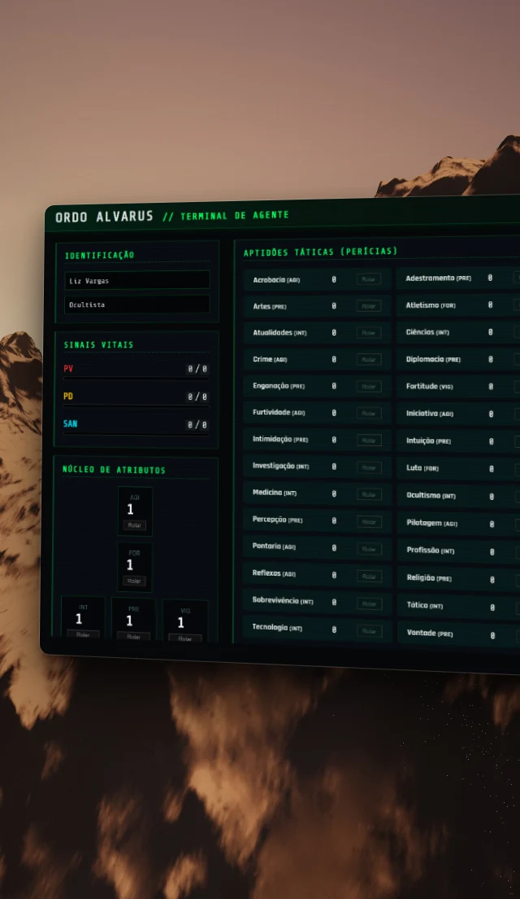
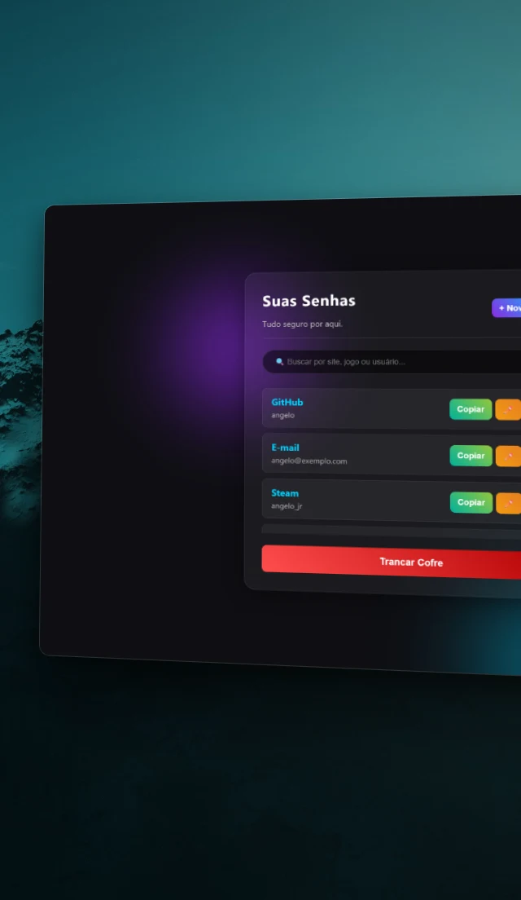
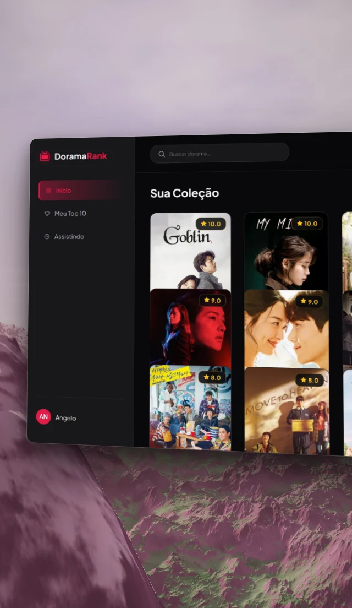
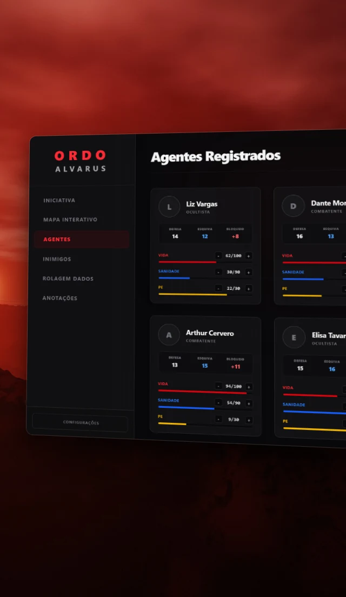
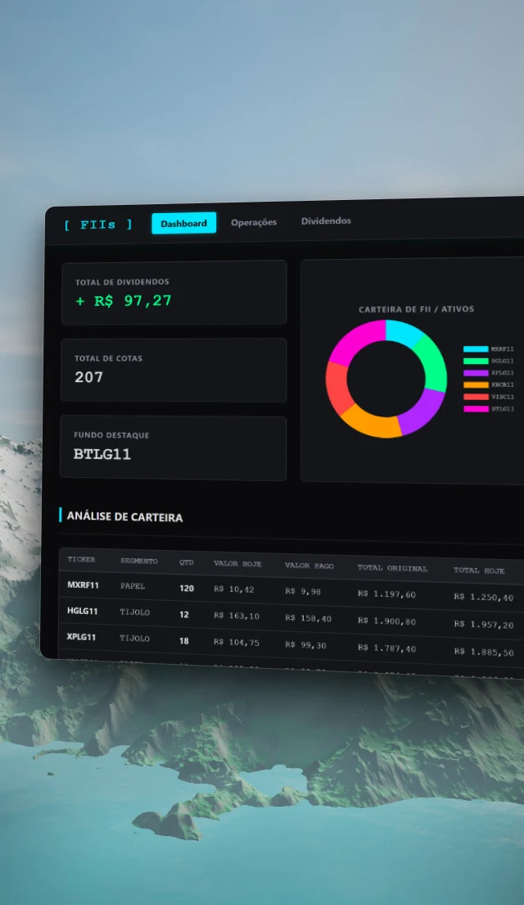
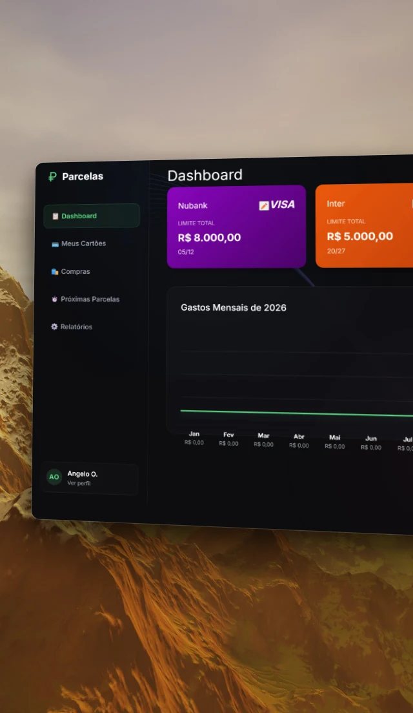
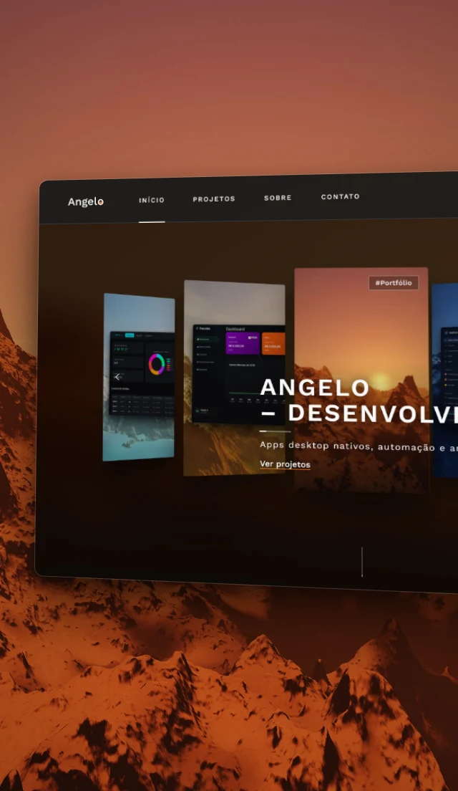

Quem sou
Sou estudante do 4º ano de Ciência da Computação e construo apps desktop que rodam direto na máquina da pessoa, com os dados sob o controle de quem usa.
Desde fevereiro de 2026 publiquei sete apps com instalador para Windows, cinco deles com Rust e Tauri. Transito entre o baixo nível, com C++ e Rust, e o alto nível, com JavaScript e Python.
Estou aberto a novas oportunidades e desafios, no Brasil ou fora dele.
Em resumo
 Projeto mais recente
VaultCore
Projeto mais recente
VaultCore
Trajetória
Os principais momentos de 2026, em ordem.
-

Primeiros passos
Comecei a publicar: um bot em Python, uma ficha de RPG e um rastreador de animes.
Ver a ficha -

-

-

-

-

-
VaultCore
Voltei às senhas com Argon2id, testes, integração contínua e atualização assinada.
Ver projeto -

Como eu trabalho
-
Os dados ficam com quem usa
Meus apps principais funcionam sem conta e sem servidor próprio. Do cofre de senhas à carteira de investimentos, tudo fica no computador da pessoa.
-
Refaço quando aprendo
O Meu Cofre abriu caminho para o VaultCore, e a ficha de RPG virou uma mesa virtual. Cada versão resolve o que a anterior deixava de fora.
-
Publico para outras pessoas usarem
Os cinco apps principais têm instalador público, e quatro deles têm o código aberto no GitHub.
Onde usei cada ferramenta
-
Apps desktop
Rust, Tauri, Electron
-
Interfaces
React, TypeScript, Tailwind CSS, Three.js
-
Dados e APIs
SQLite, LocalStorage, TMDB, Brapi, Jikan
-
Segurança
Argon2id, AES-256-GCM, atualização assinada
-
Back-end e automação
Python, FastAPI, SQLAlchemy, Selenium
-
Qualidade
Testes em Rust, Pytest, GitHub Actions
Agora
Atualizado em outubro de 2026
- Cursando o 4º ano de Ciência da Computação
- Preparando a nova versão do FII Tracker, com a carteira protegida por senha
- Planejando Windows Hello e códigos 2FA para o VaultCore
- Aberto a novas oportunidades
Vamos conversar?
Tem uma vaga, uma ideia ou uma dúvida sobre algum projeto? Escreva pelo formulário ou direto para angeloDev1@outlook.com.